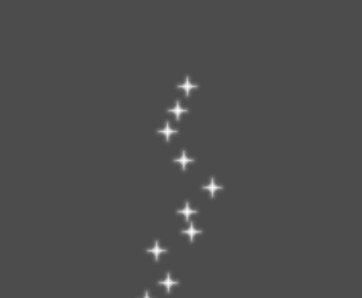
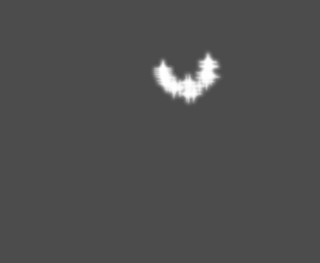
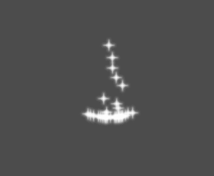
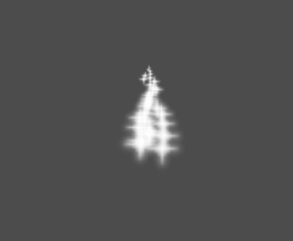
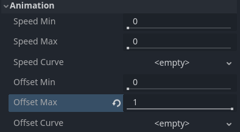
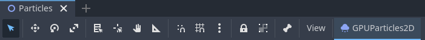
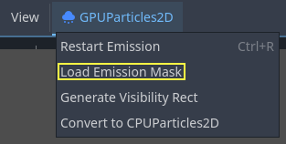
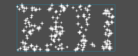
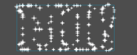

Sử dụng ParticleProcessMaterial trong 2D
Các thuộc tính của process material

Thuộc tính min, max và curve
Các thuộc tính trong material này điều khiển cách các hạt hoạt động và thay đổi trong suốt vòng đời của chúng. Nhiều thuộc tính có các giá trị Min, Max và Curve cho phép bạn tinh chỉnh hành vi của chúng. Mối quan hệ giữa các giá trị này như sau: khi một hạt được sinh ra, thuộc tính được gán một giá trị ngẫu nhiên giữa Min và Max. Nếu Min và Max bằng nhau, giá trị sẽ luôn giống nhau cho mọi hạt. Nếu Curve cũng được đặt, giá trị của thuộc tính sẽ được nhân với giá trị của đường cong tại thời điểm hiện tại trong vòng đời của hạt. Hãy dùng đường cong để thay đổi thuộc tính theo vòng đời của hạt. Bằng cách này có thể biểu diễn những hành vi rất phức tạp.
Ghi chú
Trang này trình bày cách dùng ParticleProcessMaterial riêng cho các scene 2D. Để biết cách dùng nó trong scene 3D, hãy xem Các thuộc tính của process material.
Lifetime Randomness
Thuộc tính Lifetime Randomness điều khiển mức độ ngẫu nhiên áp dụng cho vòng đời của mỗi hạt. Giá trị 0 nghĩa là hoàn toàn không ngẫu nhiên và mọi hạt sống trong cùng một khoảng thời gian, được đặt bởi thuộc tính Lifetime. Giá trị 1 nghĩa là vòng đời của hạt hoàn toàn ngẫu nhiên trong khoảng [0.0, Lifetime].
Particle Flags
Spawn
Angle
Xác định góc ban đầu của hạt (tính bằng độ). Tham số này chủ yếu hữu ích khi được ngẫu nhiên hóa.

Velocity
Hướng
Đây là hướng cơ sở mà các hạt được phát ra. Mặc định là Vector3(1, 0, 0), khiến các hạt phát ra về bên phải. Tuy nhiên, với cài đặt trọng lực mặc định, các hạt sẽ rơi thẳng xuống.

Để thấy rõ tác dụng của thuộc tính này, bạn cần một vận tốc ban đầu lớn hơn 0. Ở đây, chúng ta đặt vận tốc ban đầu là 40. Bạn sẽ thấy các hạt phát ra về bên phải, rồi rơi xuống do trọng lực.

Spread
Tham số này là góc tính bằng độ sẽ được cộng ngẫu nhiên theo cả hai phía vào Direction cơ sở. Spread bằng 180 sẽ phát ra theo mọi hướng (+/- 180). Để spread có tác dụng, tham số "Initial Velocity" phải lớn hơn 0.

Flatness
Thuộc tính này chỉ hữu ích cho hạt 3D.
Initial Velocity
Vận tốc ban đầu là tốc độ mà các hạt được phát ra (tính bằng pixel/giây). Tốc độ sau đó có thể bị thay đổi bởi trọng lực hoặc các gia tốc khác (như mô tả bên dưới).

Animated Velocity
Angular Velocity
Vận tốc góc là tốc độ các hạt xoay quanh tâm của chúng (tính bằng độ/giây).

Orbit Velocity
Vận tốc quỹ đạo được dùng để làm các hạt quay quanh tâm của chúng.

Gia tốc
Gravity
Trọng lực áp dụng cho mọi hạt.

Linear Acceleration
Gia tốc tuyến tính áp dụng cho mỗi hạt.
Radial Acceleration
Nếu gia tốc này dương, các hạt sẽ được tăng tốc ra xa tâm. Nếu âm, chúng sẽ bị hút về phía tâm.

Tangential Acceleration
Gia tốc này sẽ dùng vector tiếp tuyến với tâm. Kết hợp với gia tốc hướng tâm có thể tạo ra những hiệu ứng đẹp.

Damping
Damping áp dụng ma sát lên các hạt, buộc chúng dừng lại. Nó đặc biệt hữu ích cho tia lửa hoặc vụ nổ, vốn thường bắt đầu với vận tốc tuyến tính cao rồi dừng lại khi mờ dần.

Display
Tỉ lệ
Xác định tỉ lệ ban đầu của các hạt.

Color Curves
Màu sắc
Dùng để thay đổi màu của các hạt được phát ra.
Biến thiên sắc độ (Hue Variation)
Giá trị Variation đặt độ biến thiên sắc độ (hue) ban đầu áp dụng cho mỗi hạt. Giá trị Variation Random điều khiển tỉ lệ ngẫu nhiên của độ biến thiên sắc độ.
Hoạt ảnh
Ghi chú
Hoạt ảnh flipbook của hạt chỉ có tác dụng nếu CanvasItemMaterial dùng trên node GPUParticles2D hoặc CPUParticles2D đã được cấu hình tương ứng.
Để thiết lập flipbook của hạt phát tuần tự, hãy đặt các giá trị Speed Min và Speed Max thành 1:

Thiết lập hoạt ảnh hạt để phát trong suốt vòng đời của hạt
Mặc định, việc lặp bị tắt. Nếu hạt phát xong trước khi vòng đời kết thúc, hạt sẽ tiếp tục dùng frame cuối cùng của flipbook (có thể hoàn toàn trong suốt tùy cách texture flipbook được thiết kế). Nếu bật lặp, hoạt ảnh sẽ quay lại frame đầu tiên và tiếp tục phát.
Tùy vào số lượng hình ảnh trong sprite sheet và thời gian sống của hạt, hoạt ảnh có thể trông không mượt. Mối quan hệ giữa vòng đời của hạt, tốc độ hoạt ảnh và số hình ảnh trong sprite sheet như sau:
Ghi chú
Ở tốc độ hoạt ảnh 1.0, hoạt ảnh sẽ đến hình cuối cùng trong chuỗi đúng lúc vòng đời của hạt kết thúc.
Nếu bạn muốn flipbook của hạt được dùng làm nguồn texture ngẫu nhiên cho từng hạt, hãy giữ các giá trị tốc độ bằng 0 và thay vào đó đặt Offset Max thành 1:

Thiết lập hoạt ảnh hạt với offset ngẫu nhiên khi phát ra
Lưu ý rằng Fixed FPS của node GPUParticles2D cũng ảnh hưởng đến việc phát hoạt ảnh. Để hoạt ảnh phát mượt, nên đặt nó thành 0 để hạt được mô phỏng ở mọi frame được kết xuất. Nếu không thể làm vậy trong trường hợp của bạn, hãy đặt Fixed FPS bằng với tốc độ khung hình thực tế mà hoạt ảnh flipbook sử dụng (xem công thức ở trên).
Hình dạng phát xạ
ParticleProcessMaterial cho phép bạn đặt một Emission Mask, quy định vùng và hướng mà các hạt được phát ra. Mask này có thể được tạo từ các texture trong dự án của bạn.
Đảm bảo rằng một ParticleProcessMaterial đã được đặt và node GPUParticles2D đang được chọn. Một menu "Particles" sẽ xuất hiện trên thanh công cụ:

Mở nó và chọn "Load Emission Mask":

Sau đó chọn texture bạn muốn dùng làm mask:

Một hộp thoại với một số cài đặt sẽ xuất hiện.
Emission Mask
Có ba loại emission mask có thể được tạo từ một texture:
Solid Pixels: Các hạt sẽ được sinh ra từ bất kỳ vùng nào của texture, trừ các vùng trong suốt.

Border Pixels: Các hạt sẽ được sinh ra từ các cạnh ngoài của texture.

Directed Border Pixels: Tương tự Border Pixels, nhưng thêm thông tin vào mask để các hạt có thể phát ra hướng ra xa khỏi đường biên. Lưu ý rằng cần đặt
Initial Velocityđể tận dụng được tính năng này.

Emission Colors
Capture from Pixel sẽ khiến các hạt kế thừa màu của mask tại điểm sinh ra của chúng.
Khi bạn nhấp "OK", mask sẽ được tạo và gán vào ParticleProcessMaterial, trong mục Spawn rồi đến Position

Tất cả các giá trị trong mục này đều được tạo tự động bởi menu "Load Emission Mask", vì vậy thông thường bạn nên để nguyên chúng.
Ghi chú
Không nên thêm hình ảnh trực tiếp vào Point Texture hoặc Color Texture. Thay vào đó, luôn dùng menu "Load Emission Mask".
Tùy chỉnh process material
Nếu cần thay đổi hoặc triển khai hành vi mới trong code shader, bạn có thể làm vậy bằng cách chuyển ParticleProcessMaterial hiện tại thành một class_ShaderMaterial. Các thuộc tính hiện có được giữ nguyên trong quá trình chuyển đổi. Các tính năng đang bật cũng sẽ ảnh hưởng đến nội dung có trong code shader sau khi chuyển đổi.
Để làm vậy, nhấp chuột phải vào material trong FileSystem dock và chọn Convert to ShaderMaterial. Bạn cũng có thể làm vậy bằng cách nhấp chuột phải vào bất kỳ thuộc tính nào đang tham chiếu đến material trong Inspector.